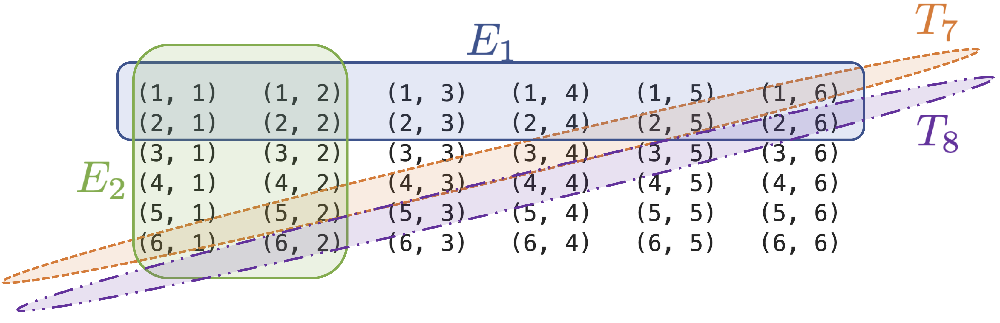
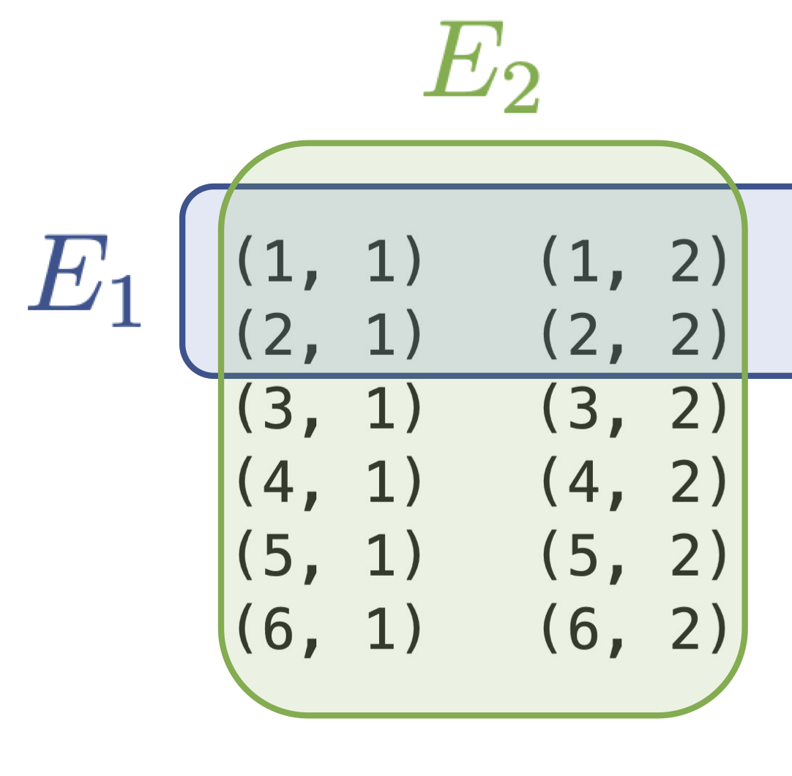
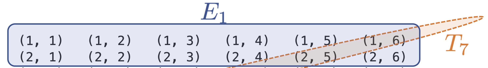
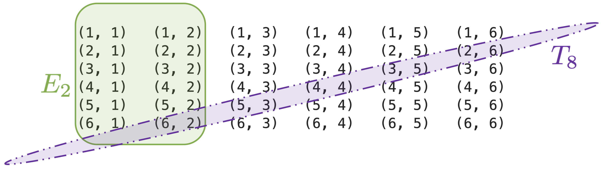
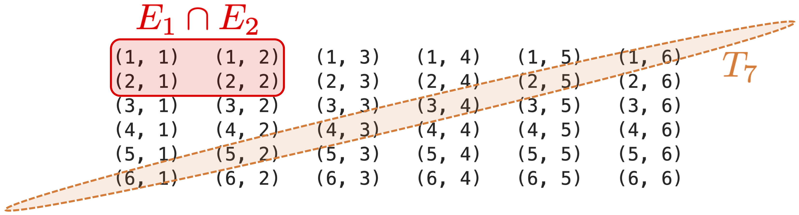

Conditional Probabilities and Independence in Fair Experiments
6.7. Conditional Probabilities and Independence in Fair Experiments#
It may be helpful to consider conditional probabilities and independence in the context of a fair experiment. Recall that for a fair experiment, the (unconditioned) probability of an event \(E\) can be computed as
Let’s see what this means in terms of conditional probabilities and independence by using an example. Consider again the example where a dice is rolled two times and the ordered values from the top face are recorded. As before, we let \(E_i\) be the event that the value on face \(i\) is less than 3. We previously showed that \(P(E_1) = P(E_2) = 1/3\). Let \(T_i\) be the event that the total (sum) value shown on the two faces is \(i\). For instance, we can write \(T_7\) in terms of the outcomes of the composite experiment as
Then
In the figure below, we illustrate four events that we will discuss: \(E_1, E_2, T_7,\) and \(T_8\).
{kind=link}

Now we will consider some conditional probabilities and see how the computation simplifies for fair experiments. In addition, we will see the implications of statistical independence for fair experiments.
First consider some generic events (i.e. representing any possible event) \(A\) and \(B\) for this experiment. Then the conditional probability of \(A\) given \(B\) can be written as
It is useful to interpret this as follows: given that \(B\) occurs, \(|A \cap B|\) is the number of outcomes in \(A\) that are within \(B\). Then the conditional probability of \(A\) given \(B\) is just the proportion of outcomes of \(A\) that are within \(B\). This verifies the approach we took when we introduced conditional probability: the conditional probability of \(A\) can be computed as the probability of \(A\) within the reduced sample space, \(B\).
To make this more concrete, let’s apply it to several of the events we have introduced. If we want to compute the conditional probability of \(E_1\) given \(E_2\), we can refer to the figure shown below:
{kind=link}

There are 4 outcomes of \(E_1\) within \(E_2\), and there are 12 total outcomes in \(E_2\), so is the proportion of outcomes of \(E_1\) within \(E_2\) is \(P(E_1|E_2)=4/12 =1/3.\)
Let’s now consider the conditional probability of the event \(T_7\) given that \(E_1\) occurred by referring to the following figure:
{kind=link}

There are 2 outcomes of \(T_7\) out of the 12 total outcomes that make up \(E_1\), so the conditional probability of \(T_7\) given \(E_1\) is \(P(T_7 |E_1) = 2/12 = 1/6\).
Note that there are 2 outcomes of \(E_1\) within the 6 total outcomes of \(T_7\), so \(P(E_1|T_7)=2/6=1/3\).
Now consider the conditional probabilities \(P(T_8|E_2)\) and \(P(E_2|T_8)\). We will use the following figure for reference:
{kind=link}

By inspection, we see that the proportion of outcomes of \(T_8\) in \(E_2\) is 1/12, so \(P(T_8|E_2) =1/12\). Similarly, the proportion of outcomes of \(E_2\) in \(T_8\) is 1/5, so \(P(E_2|T_8) = 1/5\).
Now, let’s consider which pairs events that we have discussed are independent and what that means in terms of the outcomes.
We calculated that \(P(E_1|E_2) =1/3 = P(E_1)\), so \(E_1\) is independent of \(E_2\).
We calculated that \(P(T_7|E_1) =1/6 = P(T_7)\), so \(T_7\) is independent of \(E_1\).
We calculated that \(P(E_1|T_7) = 1/3= P(E_1)\), so \(E_1\) is independent of \(T_7\) (which we also could infer from the previous step).
We calculated that \(P(T_8 | E_2) = 1/12\), but \(P(T_8) =5/36\), so \(T_8\) is not independent of \(E_2\).
We calculated that \(P(E_2 | T_8) = 1/5\), but \(P(E_2)=1/3\), so \(E_2\) is not independent of \(T_8\) (again, we could have inferred this from the previous step).
So, what is required for independence for fair experiments? For an event \(A\) to be independent of an event \(B\), the proportion of outcomes of \(A\) within \(B\) must equal the proportion of outcomes of \(A\) within \(S\) (the original sample space). Or we could also test if the proportion of outcomes of \(B\) within \(A\) is equal to the proportion of outcomes of \(B\) within \(S\).
Please note that all these computations involving proportions do not necessarily hold (and usually do not hold) if the experiment is not fair!
Now, note that \(E_1\) and \(E_2\) are independent. And we showed \(T_7\) and \(E_1\) are independent. It is not hard to see that \(T_7\) and \(E_2\) are also independent. Combined, we can see that \(E_1\), \(E_2\), and \(T_7\) are pairwise statistically independent. So, are these events independent? We only need to check if one more condition holds: does \(P(E_1 \cap E_2 \cap T_7)\) equal \(P(E_1) P(E_2) P(T_7)\)? We have
Now consider \(E_1 \cap E_2 \cap T_7\). We can find the outcomes in this event by performing the leftmost intersection first, as \(\left( E_1 \cap E_2\right) \cap T_7\), as shown in the following figure:
{kind=link}

The events \(E_1 \cap E_2\) and \(T_7\) are mutually exclusive, so there are no outcomes in \(E_1 \cap E_2 \cap T_7\), and \(P(E_1 \cap E_2 \cap T_7) = 0 \ne P(E_1) P(E_2) P(T_7)\)
Thus, \(E_1\), \(E_2\), and \(T_7\) are an example of events that are pairwise s.i., but not s.i.